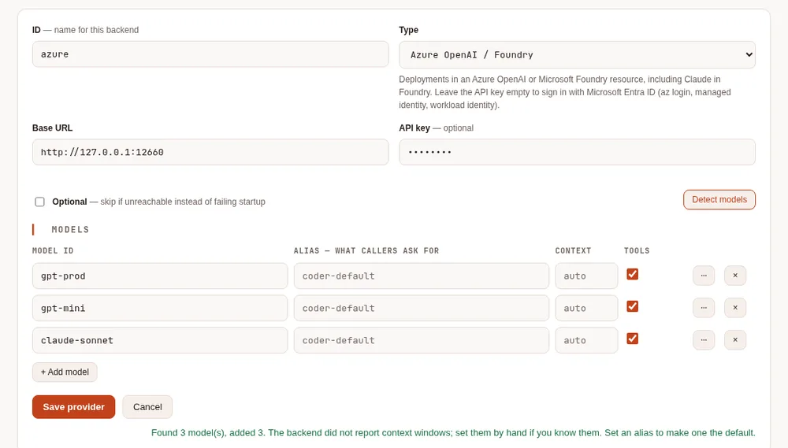
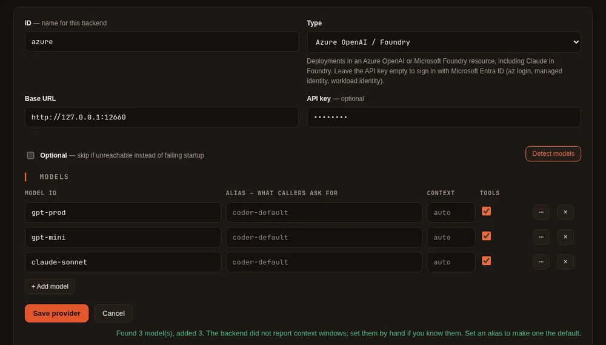

Azure and Google Cloud #
On this page
Use the models your company already pays for in its own cloud: Azure OpenAI and Microsoft Foundry (including
Claude in Foundry), and Google's Vertex AI, which Google now also calls Agent Platform (Gemini, and Claude on
Vertex). Requests are billed to your cloud account under your cloud agreement. Maple stores no cloud key when you
sign in with the cloud's own identity: on a laptop it uses your az login or gcloud sign-in, and on Kubernetes the
pod's workload identity.
Follow your cloud provider's terms. Both clouds make the customer responsible for the people it serves and do not allow reselling the service.
In plain words #
- What it is. Use the models your company already pays for in Azure (Azure OpenAI, Microsoft Foundry) or Google Cloud (Vertex AI), billed to your cloud account.
- Why you want it. Your company's agreement, region and data rules apply, and you usually need no new key: on a
laptop Maple uses your
az loginorgcloudsign-in, on Kubernetes the pod's identity. - The clicks. Setup page, Providers, + Add provider, choose Azure OpenAI / Foundry or Google Vertex AI, type
the resource's address, then Detect models or type the deployment names. The details and the
config.yamlfor each cloud follow.
Azure OpenAI and Microsoft Foundry #
One provider is one Azure resource. Its deployments are its models: the model id is the deployment name you chose in the Azure portal or Foundry.
providers:
- id: azure
type: azure
base_url: https://my-resource.openai.azure.com # the resource's endpoint
models:
- id: gpt-prod # a deployment name
context_window: 400000
supports_tools: true
- id: claude-sonnet # a Claude deployment in Foundry
context_window: 200000
supports_tools: trueOn the setup page: Add provider, type Azure OpenAI / Foundry, the resource's endpoint as the base URL, then add the deployment names (Detect models lists them when the resource still offers the older deployments list; otherwise type them).


Claude in Foundry. A deployment whose name contains claude is sent through Anthropic's Messages API at the
resource's Foundry address (https://<resource>.services.ai.azure.com/anthropic/v1), and everything else through the
OpenAI chat API. For a Claude deployment with another name, add endpoints: ["/v1/messages"] to it; to send Claude
somewhere else, set azure.anthropic_base_url (the resource's key goes there only when it is the resource's own
server or another Azure OpenAI or Foundry address). Foundry does not report Anthropic's rate-limit figures, so the
Health card judges these deployments by their errors and response times only.
Signing in #
- An API key: put it in the provider's API key field on the setup page (it goes to the secret store, and the
configuration keeps a
${secret:...}reference). Keys are under Keys and Endpoint on the resource in the portal. - Microsoft Entra ID: leave the key empty. The proxy asks Entra ID for a token when it needs one, keeps it in memory, and asks again before it expires. Your account (or the identity) needs the Cognitive Services OpenAI User role on the resource, or Azure AI User for Foundry.
Where the token comes from is set by azure.credential:
credential | Where the token comes from | Typical place |
|---|---|---|
auto (default) | The environment, then workload identity, then a managed identity, then the Azure CLI | Anywhere |
cli | az login | A laptop |
managed-identity | The Azure machine's managed identity (client_id picks a user-assigned one) | A VM, App Service, Container Apps |
workload-identity | The pod's federated token (AKS) | Kubernetes |
environment | A service principal: AZURE_TENANT_ID, AZURE_CLIENT_ID, AZURE_CLIENT_SECRET (or a certificate) | CI |
On a laptop:
az login
maple-proxy serve # or restart it, if it was runningAn Entra ID token is only ever sent to an Azure OpenAI or Foundry resource's own address (https, under
openai.azure.com, cognitiveservices.azure.com or services.ai.azure.com). A provider whose base URL is anywhere
else, such as an API Management gateway, needs an API key.
All the settings #
azure:
api_version: v1 # default; or a dated version such as 2024-10-21
credential: auto # auto, cli, managed-identity, workload-identity, environment
client_id: "" # a user-assigned managed identity, or the workload identity's app
tenant_id: "" # when not your default tenant
anthropic_base_url: "" # where Claude deployments answer, if not the resource's Foundry addressapi_version: v1 uses Azure's versionless /openai/v1 API. A dated version uses the older
/openai/deployments/<name>/chat/completions?api-version=... route, for a resource or gateway that needs it.
client_id works with managed-identity and workload-identity; with auto, set AZURE_CLIENT_ID instead.
Google Vertex AI (Agent Platform) #
One provider is one Google Cloud project in one location: a region (us-east5, europe-west4), a multi-region
(us, eu) or global.
providers:
- id: vertex
type: vertex
vertex:
project: my-project # default: the project your credentials name, or GOOGLE_CLOUD_PROJECT
location: global # default
models:
- id: gemini-2.5-pro
context_window: 1048576
supports_tools: true
- id: claude-sonnet-4-5@20250929
context_window: 200000
supports_tools: trueModels whose id starts with claude go to Anthropic's models on Vertex; the rest to Google's Gemini models. Use
the model ids from the Model Garden page of each model. On the setup page: Add provider, type Google Vertex
AI, and the models; the base URL can stay empty, or hold
https://<location>-aiplatform.googleapis.com/v1/projects/<project>/locations/<location> to say both at once (or a
Private Service Connect address).
Model access. Enable the Vertex AI API on the project. Gemini models are available to the project; each Claude model must be enabled once in Model Garden. The account needs the Vertex AI User role.
Locations. Not every model is in every location: Google lists them per model. Anthropic serves its newest Claude
models only on the global and multi-region (us, eu) endpoints. global gives the most capacity; a region keeps
requests and data in that region.
Signing in #
The proxy uses Google's application default credentials, found in this order:
The file named by
GOOGLE_APPLICATION_CREDENTIALS: a service account key, or a workload identity federation configuration (for a pod or runner outside Google Cloud).Your own sign-in, on a laptop:
gcloud auth application-default loginThe metadata server of the machine or pod it runs on: Compute Engine, Cloud Run, and GKE with workload identity.
The token is kept in memory and refreshed before it expires. It is only ever sent to Google's API addresses
(https, under googleapis.com).
Regions and accounts as fallbacks #
Each provider is an account in Maple's sense, so several regions, projects or resources work like several Copilot accounts: list them in �0�, assign them to teams, and share them through a hub.
providers:
- {id: vertex-us, type: vertex, vertex: {project: my-project, location: us-east5}, models: [{id: gemini-2.5-pro}]}
- {id: vertex-eu, type: vertex, vertex: {project: my-project, location: europe-west4}, models: [{id: gemini-2.5-pro}]}
provider_fallbacks:
vertex-us: [vertex-eu] # a busy region (429) or an outage moves to the next one, mid-taskvertex-us/gemini-2.5-pro asks for one region's copy. A plain gemini-2.5-pro goes to one of them, and the proxy's
log says which at start; use the qualified name in your tools to be sure.
A per-minute limit (HTTP 429) is a rate limit: the request moves on to the next account, and the busy one is tried
again once the wait the cloud asked for is over. A refused sign-in (an expired az login or gcloud session, a missing role) shows as not
authorised on the setup page.
On Kubernetes #
The Kubernetes samples include a component for each cloud's workload identity in
config/cloud-identity/. Add it to your overlay:
# config/single/kustomization.yaml (or config/ha)
components:
- ../cloud-identity/aks # or ../cloud-identity/gkeAKS (workload identity) #
- Enable the OIDC issuer and workload identity on the cluster, and create a user-assigned managed identity with the Cognitive Services OpenAI User role on the resource.
- Federate it with the proxy's service account,
system:serviceaccount:maple:maple-proxy(az identity federated-credential create --issuer <the cluster's OIDC issuer> --subject ...). - Put the identity's client id in
config/cloud-identity/aks/serviceaccount.yaml. - In the provider, leave the key empty and set
azure: {credential: workload-identity}(or keepauto).
The AKS webhook gives the pod AZURE_CLIENT_ID, AZURE_TENANT_ID and AZURE_FEDERATED_TOKEN_FILE.
GKE (workload identity federation) #
- Enable workload identity federation for GKE on the cluster and its node pools.
- Grant the proxy's Kubernetes service account the Vertex AI User role, either directly
(
principal://iam.googleapis.com/projects/<number>/locations/global/workloadIdentityPools/<project>.svc.id.goog/subject/ns/maple/sa/maple-proxy) or through a Google service account named inconfig/cloud-identity/gke/serviceaccount.yaml. - In the provider, set
vertex.project(the metadata server also says it).
No key file is mounted: the pod gets its token from the GKE metadata server.
Cost and usage #
Neither cloud states a price on its replies, so the proxy records the tokens each call used (input, cached input
and output) and no price. For Claude models, estimate_cost: true on the provider adds an estimate from Anthropic's
list prices, labelled as an estimate; your cloud bill can differ (commitments, regional pricing). See
Cost. A deployment whose name does not say which Claude model it is gets price_as on its model
entry: see When Maple can't tell which Claude model a name is.